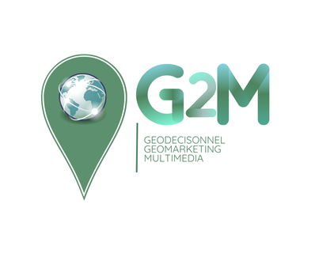

Nos étudiants
Géomatique : Géodécisionnel, Géomarketing et Multimédia

Les étudiants du Master G2M sont au cœur de la formation, enrichissant le programme grâce à leurs projets innovants et leur implication dans des stages et alternances. Découvrez leurs réalisations et leurs témoignages.
Auteur : Camille Delahaye
Réalisé au laboratoire COGIT de l’IGN, ce projet vise à répondre à une problématique clé en cartographie : comment généraliser des données géographiques pour produire des cartes lisibles et adaptées à différentes échelles ? En combinant des méthodes existantes et une nouvelle approche développée lors du stage, Camille a proposé une solution hybride améliorant la précision des limites urbaines.
Consulter le documentAuteur : Rina Ralison
Ce projet a permis de développer une infrastructure SIG combinant PostGIS, GeoServer et OpenLayers pour publier en ligne une carte mondiale des régions arides. Le travail comprenait la configuration des outils, le stylisme cartographique et la création d’une interface interactive, facilitant la diffusion et l’exploration des données pour les utilisateurs.
Consulter le documentAuteur : Maxime Cammas
Réalisé pour la section géographique de l’État-Major des Armées, ce projet a porté sur la réorganisation des données SIG et la préparation d’un serveur cartographique. Maxime a conçu une architecture optimisée pour améliorer l’accès et la gestion des données géographiques, posant les bases d’une meilleure efficacité opérationnelle.
Consulter le document